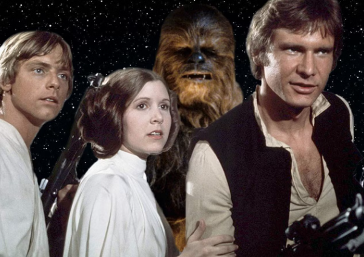

Меню: |
Вітаю у всесвіті Зоряні війни«Зо́ряні ві́йни» — культова епічна фантастична медіафраншиза, яка розповідає про різні конфлікти та війни в «далекій-далекій галактиці». Зокрема, основна сага, з якої все почалося, зосереджена на історії роду Скайвокерів — Енакіна, його дітей Люка і Леї та всіх, хто з ними пов'язаний. Складається з 9 основних кінофільмів (пронумеровані за хронологією подій):
А також 2 спін-офів, що є складовими антології, а також анімаційних серіалів, мультфільмів, телефільмів, книг, коміксів, відеоігор, поєднаних єдиним всесвітом, придуманим американським режисером і кінопродюсером Джорджем Лукасом в кінці 1970-х. З цієї причини Зоряні війни є насамперед кіносерія, відтак фільми за нею задають канон для решти творів. Інтерактивне зображення героївНатисніть на героїв на зображенні, щоб перейти на присвячені їм сторінки: Останні новини
Корисні посилання |
Про сайтЛаскаво просимо у всесвіт Star Wars! Тут ви знайдете інформацію про персонажів, планети, кораблі та хронологію фільмів. Короткі факти
Цікаві факти
|